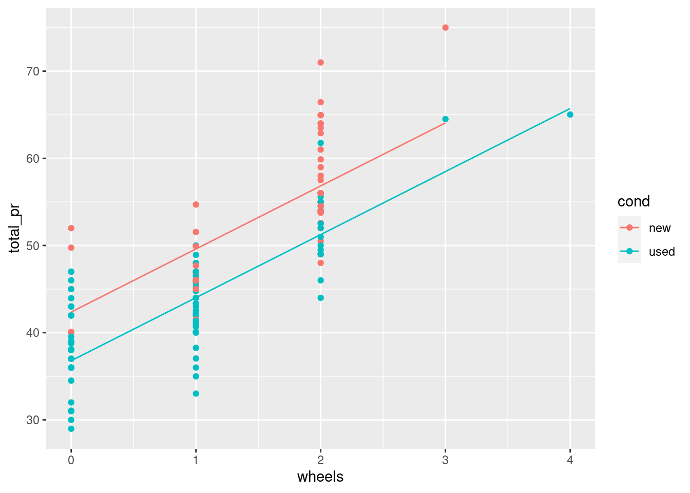
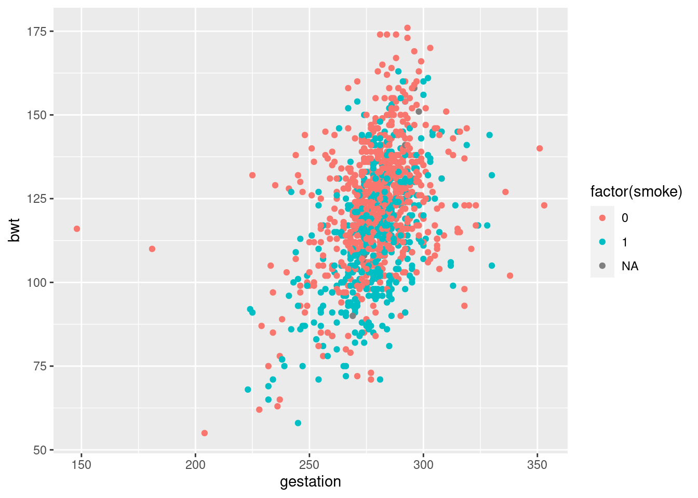
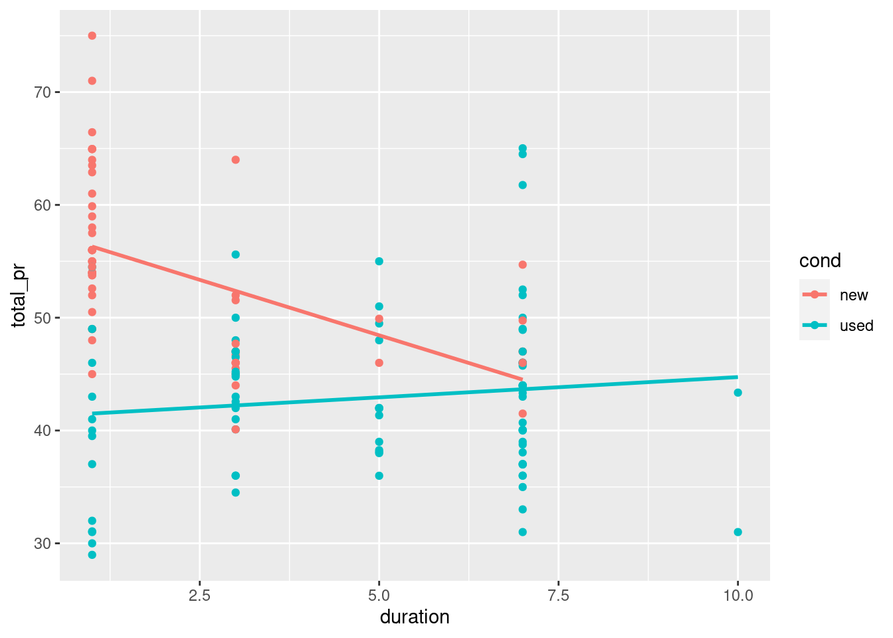

We use the lm() function to fit linear models to data. In this case, we want to understand how the price of MarioKart games sold at auction varies as a function of not only the number of wheels included in the package, but also whether the item is new or used. Obviously, it is expected that you might have to pay a premium to buy these new. But how much is that premium? Can we estimate its value after controlling for the number of wheels?
We will fit a parallel slopes model using lm(). In addition to the data argument, lm() needs to know which variables you want to include in your regression model, and how you want to include them. It accomplishes this using a formula argument. A simple linear regression formula looks like y ~ x, where y is the name of the response variable, and x is the name of the explanatory variable. Here, we will simply extend this formula to include multiple explanatory variables. A parallel slopes model has the form y ~ x + z, where z is a categorical explanatory variable, and x is a numerical explanatory variable.
The output from lm() is a model object, which when printed, will show the fitted coefficients.
# fit parallel slopesmod_mario <-lm(total_pr ~ wheels + cond, data = mario_kart)
Reasoning about two intercepts
The mario_kart data contains several other variables. The totalPr, startPr, and shipPr variables are numeric, while the cond and stockPhoto variables are categorical.
Which formula will result in a parallel slopes model?
totalPr ~ shipPr + stockPhoto
Using geom_line() and augment()
Parallel slopes models are so-named because we can visualize these models in the data space as not one line, but two parallel lines. To do this, we’ll draw two things:
a scatterplot showing the data, with color separating the points into groups a line for each value of the categorical variable Our plotting strategy is to compute the fitted values, plot these, and connect the points to form a line. The augment() function from the broom package provides an easy way to add the fitted values to our data frame, and the geom_line() function can then use that data frame to plot the points and connect them.
Note that this approach has the added benefit of automatically coloring the lines appropriately to match the data.
You already know how to use ggplot() and geom_point() to make the scatterplot. The only twist is that now you’ll pass your augment()-ed model as the data argument in your ggplot() call. When you add your geom_line(), instead of letting the y aesthetic inherit its values from the ggplot() call, you can set it to the .fitted column of the augment()-ed model. This has the advantage of automatically coloring the lines for you.
# Augment the modelaugmented_mod <-augment(mod_mario)glimpse(augmented_mod)
# scatterplot, with colordata_space <-ggplot(augmented_mod, aes(x = wheels, y = total_pr , color = cond )) +geom_point()# single call to geom_line()data_space +geom_line(aes(y = .fitted))

Intercept interpretation
Recall that the cond variable is either new or used. Here are the fitted coefficients from your model:
Coefficients: (Intercept) wheels condused
42.370 7.233 -5.585
Choose the correct interpretation of the coefficient on condused:
The expected price of a used MarioKart is $5.58 less than that of a new one with the same number of wheels.
For each additional wheel, the expected price of a MarioKart increases by $7.23 regardless of whether it is new or used.
Syntax from math The babies data set contains observations about the birthweight and other characteristics of children born in the San Francisco Bay area from 1960–1967.
We would like to build a model for birthweight as a function of the mother’s age and whether this child was her first (parity == 0). Use the mathematical specification below to code the model in R.
data( babies, package ="openintro")mod <-lm(bwt~ age+parity, data = babies)tidy(mod) %>%pander()
term
estimate
std.error
statistic
p.value
(Intercept)
118.3
2.788
42.43
3.957e-243
age
0.06315
0.09577
0.6594
0.5097
parity
-1.652
1.271
-1.3
0.1937
Syntax from plot
This time, we’d like to build a model for birthweight as a function of the length of gestation and the mother’s smoking status. Use the plot to inform your model specification.
ggplot(babies, aes(gestation, bwt, color =factor(smoke)))+geom_point()

mod <-lm(bwt~ gestation + smoke, data = babies)tidy(mod) %>%pander()
term
estimate
std.error
statistic
p.value
(Intercept)
-0.9317
8.152
-0.1143
0.909
gestation
0.4429
0.02902
15.26
3.156e-48
smoke
-8.088
0.9527
-8.49
5.963e-17
R-squared vs. adjusted R-squared Two common measures of how well a model fits to data are \[R^2\] (the coefficient of determination) and the adjusted \[R^2\] . The former measures the percentage of the variability in the response variable that is explained by the model. To compute this, we define
\[R^2 = 1 - \frac{sse}{sst} \] where SSE and SST are the sum of the squared residuals, and the total sum of the squares, respectively. One issue with this measure is that the can only decrease as new variable are added to the model, while the SST depends only on the response variable and therefore is not affected by changes to the model. This means that you can increase \[R^2\] by adding any additional variable to your model—even random noise.
The adjusted \[R^2\] includes a term that penalizes a model for each additional explanatory variable (where is the number of explanatory variables). We can see both measures in the output of the summary() function on our model object.
# R^2 and adjusted R^2summary(mod_mario)
Call:
lm(formula = total_pr ~ wheels + cond, data = mario_kart)
Residuals:
Min 1Q Median 3Q Max
-11.0078 -3.0754 -0.8254 2.9822 14.1646
Coefficients:
Estimate Std. Error t value Pr(>|t|)
(Intercept) 42.3698 1.0651 39.780 < 2e-16 ***
wheels 7.2328 0.5419 13.347 < 2e-16 ***
condused -5.5848 0.9245 -6.041 1.35e-08 ***
---
Signif. codes: 0 '***' 0.001 '**' 0.01 '*' 0.05 '.' 0.1 ' ' 1
Residual standard error: 4.887 on 138 degrees of freedom
(2 observations deleted due to missingness)
Multiple R-squared: 0.7165, Adjusted R-squared: 0.7124
F-statistic: 174.4 on 2 and 138 DF, p-value: < 2.2e-16
# add random noisemario_kart_noisy <- mario_kart %>%mutate(noise =rnorm(n =nrow(mario_kart)))# compute new modelmod2_mario2 <-lm(total_pr ~ wheels + cond+noise, data = mario_kart_noisy)# new R^2 and adjusted R^2summary(mod2_mario2)
Call:
lm(formula = total_pr ~ wheels + cond + noise, data = mario_kart_noisy)
Residuals:
Min 1Q Median 3Q Max
-10.292 -3.224 -1.055 2.619 13.369
Coefficients:
Estimate Std. Error t value Pr(>|t|)
(Intercept) 42.4194 1.0583 40.083 < 2e-16 ***
wheels 7.2140 0.5383 13.401 < 2e-16 ***
condused -5.6717 0.9197 -6.167 7.33e-09 ***
noise 0.6738 0.3964 1.700 0.0914 .
---
Signif. codes: 0 '***' 0.001 '**' 0.01 '*' 0.05 '.' 0.1 ' ' 1
Residual standard error: 4.854 on 137 degrees of freedom
(2 observations deleted due to missingness)
Multiple R-squared: 0.7224, Adjusted R-squared: 0.7163
F-statistic: 118.8 on 3 and 137 DF, p-value: < 2.2e-16
Prediction
Once we have fit a regression model, we can use it to make predictions for unseen observations or retrieve the fitted values. Here, we explore two methods for doing the latter.
A traditional way to return the fitted values (i.e. the y ’s) is to run the predict() function on the model object. This will return a vector of the fitted values. Note that predict() will take an optional newdata argument that will allow you to make predictions for observations that are not in the original data.
A newer alternative is the augment() function from the broom package, which returns a data.frame with the response varible (), the relevant explanatory variables (the ’s), the fitted value ( ) and some information about the residuals (). augment() will also take a newdata argument that allows you to make predictions.
# return a data frameaugment(mod_mario)%>%head() %>%kable()
.rownames
total_pr
wheels
cond
.fitted
.resid
.hat
.sigma
.cooksd
.std.resid
1
51.55
1
new
49.60260
1.947399
0.0210316
4.902340
0.0011614
0.4027089
2
37.04
1
used
44.01777
-6.977767
0.0125041
4.868399
0.0087123
-1.4367109
3
45.50
1
new
49.60260
-4.102601
0.0210316
4.892414
0.0051543
-0.8483898
4
44.00
1
new
49.60260
-5.602601
0.0210316
4.881308
0.0096124
-1.1585795
5
71.00
2
new
56.83544
14.164559
0.0191563
4.750591
0.0557493
2.9263328
6
45.00
0
new
42.36976
2.630240
0.0474932
4.899816
0.0050537
0.5514192
Thought experiments
Suppose that after going apple picking you have 12 apples left over. You decide to conduct an experiment to investigate how quickly they will rot under certain conditions. You place six apples in a cool spot in your basement, and leave the other six on the window sill in the kitchen. Every week, you estimate the percentage of the surface area of the apple that is rotten or moldy.
The rate at which apples rot will vary based on the temperature.
Fitting a model with interaction
Including an interaction term in a model is easy—we just have to tell lm() that we want to include that new variable. An expression of the form
lm(y ~ x + z + x:z, data = mydata)
will do the trick. The use of the colon (:) here means that the interaction between and will be a third term in the model.
# include interactionmod <-lm(total_pr ~cond + duration + cond:duration, data = mario_kart)tidy(mod) %>%pander()
term
estimate
std.error
statistic
p.value
(Intercept)
58.27
1.366
42.64
5.832e-81
condused
-17.12
2.178
-7.86
1.014e-12
duration
-1.966
0.4488
-4.38
2.342e-05
condused:duration
2.325
0.5484
4.239
4.102e-05
Visualizing interaction models
Interaction allows the slope of the regression line in each group to vary. In this case, this means that the relationship between the final price and the length of the auction is moderated by the condition of each item.
Interaction models are easy to visualize in the data space with ggplot2 because they have the same coefficients as if the models were fit independently to each group defined by the level of the categorical variable. In this case, new and used MarioKarts each get their own regression line. To see this, we can set an aesthetic (e.g. color) to the categorical variable, and then add a geom_smooth() layer to overlay the regression line for each color.
# interaction plotggplot(mario_kart, aes(duration, total_pr, color = cond)) +geom_point() +geom_smooth(method ="lm", se =0)

Consequences of Simpson’s paradox
In the simple linear regression model for average SAT score, (total) as a function of average teacher salary (salary), the fitted coefficient was -5.02 points per thousand dollars. This suggests that for every additional thousand dollars of salary for teachers in a particular state, the expected SAT score for a student from that state is about 5 points lower.
In the model that includes the percentage of students taking the SAT, the coefficient on salary becomes 1.84 points per thousand dollars. Choose the correct interpretation of this slope coefficient.
For every additional thousand dollars of salary for teachers in a particular state, the expected SAT score for a student from that state is about 2 points higher, after controlling for the percentage of students taking the SAT.
Simpson’s paradox in action
A mild version of Simpson’s paradox can be observed in the MarioKart auction data. Consider the relationship between the final auction price and the length of the auction. It seems reasonable to assume that longer auctions would result in higher prices, since—other things being equal—a longer auction gives more bidders more time to see the auction and bid on the item.
However, a simple linear regression model reveals the opposite: longer auctions are associated with lower final prices. The problem is that all other things are not equal. In this case, the new MarioKarts—which people pay a premium for—were mostly sold in one-day auctions, while a plurality of the used MarioKarts were sold in the standard seven-day auctions.
Our simple linear regression model is misleading, in that it suggests a negative relationship between final auction price and duration. However, for the used MarioKarts, the relationship is positive.
slr <-ggplot(mario_kart, aes(y = total_pr, x = duration)) +geom_point() +geom_smooth(method ="lm", se =FALSE)# model with one slopemod <-lm(total_pr ~ duration, data = mario_kart)# plot with two slopesslr +aes(color = cond)
Fitting a MLR model
In terms of the R code, fitting a multiple linear regression model is easy: simply add variables to the model formula you specify in the lm() command.
In a parallel slopes model, we had two explanatory variables: one was numeric and one was categorical. Here, we will allow both explanatory variables to be numeric.
# Fit the model using duration and startPrmod <-lm(total_pr~ start_pr + duration, data = mario_kart)tidy(mod) %>%pander()
term
estimate
std.error
statistic
p.value
(Intercept)
51.03
1.179
43.28
3.666e-82
start_pr
0.233
0.04364
5.339
3.756e-07
duration
-1.508
0.2555
-5.902
2.645e-08
Tiling the plane
One method for visualizing a multiple linear regression model is to create a heatmap of the fitted values in the plane defined by the two explanatory variables. This heatmap will illustrate how the model output changes over different combinations of the explanatory variables.
This is a multistep process:
First, create a grid of the possible pairs of values of the explanatory variables. The grid should be over the actual range of the data present in each variable. We’ve done this for you and stored the result as a data frame called grid. Use augment() with the newdata argument to find the ’s corresponding to the values in grid. Add these to the data_space plot by using the fill aesthetic and geom_tile().
# add predictions to gridprice_hats <-augment(mod, newdata = grid)# tile the planedata_space +geom_tile(data = price_hats, aes(fill = .fitted), alpha =0.5)
Models in 3D
An alternative way to visualize a multiple regression model with two numeric explanatory variables is as a plane in three dimensions. This is possible in R using the plotly package.
We have created three objects that you will need:
x: a vector of unique values of duration y: a vector of unique values of startPr plane: a matrix of the fitted values across all combinations of x and y Much like ggplot(), the plot_ly() function will allow you to create a plot object with variables mapped to x, y, and z aesthetics. The add_markers() function is similar to geom_point() in that it allows you to add points to your 3D plot.
Note that plot_ly uses the pipe (%>%) operator to chain commands together.
# draw the 3D scatterplotp <-plot_ly(data = mario_kart, z =~totalPr, x =~duration, y =~startPr, opacity =0.6) %>%add_markers() # draw the planep %>%add_surface(x =~x, y =~y, z =~plane, showscale =FALSE)